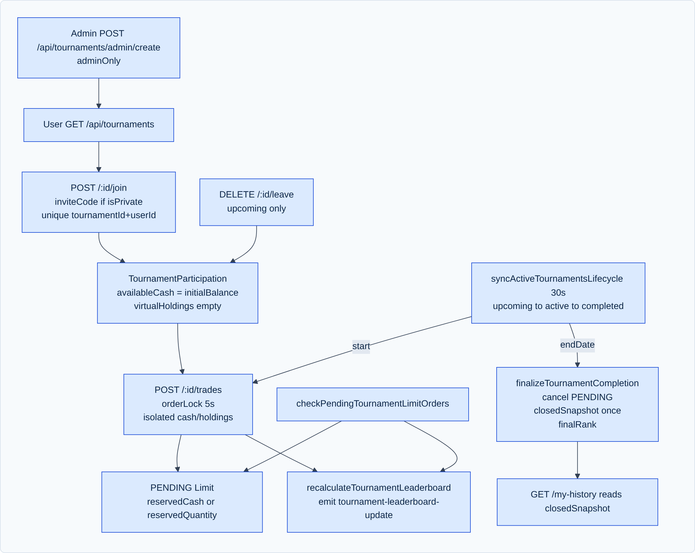

The Tournament engine provides an isolated, competitive trading environment where multiple traders participate in timed trading contests using virtual capital. This enables risk-free paper trading while introducing realistic market conditions, competition pressure, and objective performance metrics.

A critical design requirement is that tournament trading must never contaminate a user's real paper-trading capital:
Real Trading Account (FundsModel)
└── availableBalance: ₹100,000 (Completely unaffected by tournament losses)
Tournament Participation Record (TournamentParticipationModel)
├── tournamentId: "tournament_oct_2026"
├── userId: "68c123456789abcdef123455"
├── initialBalance: ₹500,000 (Independent virtual tournament capital)
├── virtualCash: ₹425,000
├── virtualHoldings: [{ symbol: "RELIANCE", qty: 25, avgPrice: 2500 }]
├── totalPortfolioValue: ₹512,500
├── roi: +2.50%
└── currentRank: 1
Tournaments transition through three strict states managed by an automated background worker (setInterval(syncActiveTournamentsLifecycle, 30000) in backend/index.js):
| Status | Preconditions | Permitted Actions | State Transitions |
|---|---|---|---|
| upcoming | currentTime < startDate |
Traders can view details and register/join. Virtual capital allocated. | Transitions to active when currentTime >= startDate. |
| active | startDate <= currentTime < endDate |
Participants can submit virtual buy/sell orders. Real-time ticks update portfolio value. | Transitions to completed when currentTime >= endDate. |
| completed | currentTime >= endDate |
Trading disabled. Final leaderboard calculated and winners locked. | Terminal state. Results preserved for historical review. |
Leaderboard rankings are based on Return on Investment (ROI) rather than absolute rupee value, ensuring fairness across varying tournament structures:
Current Equity = Virtual Cash + Sum of all (Virtual Qty * Current LTP) Net Return = Current Equity - Initial Virtual Balance ROI (%) = ( Net Return / Initial Virtual Balance ) * 100
As live market ticks stream into the backend, the tournament service recalculates participants' portfolio values. Updated ranks are broadcast immediately over WebSockets to all clients in the tournament room:
io.to(`tournament:${tournamentId}`).emit('leaderboard-update', {
tournamentId,
leaderboard: updatedRankings
});